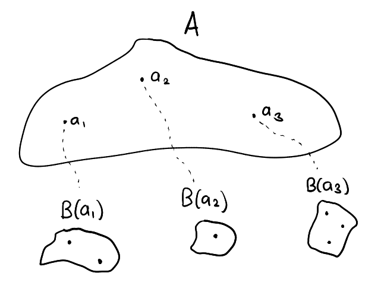
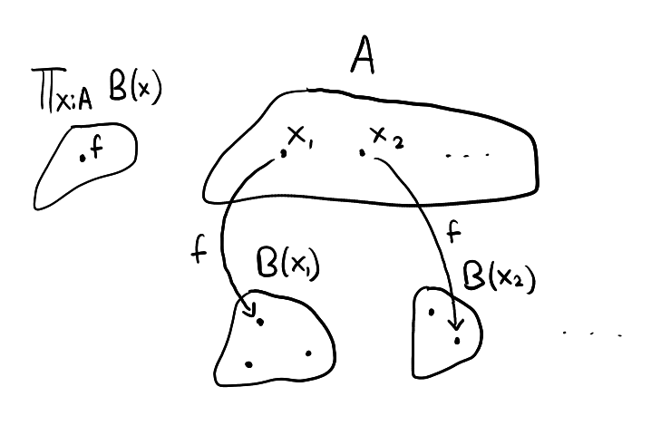
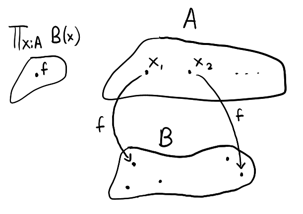
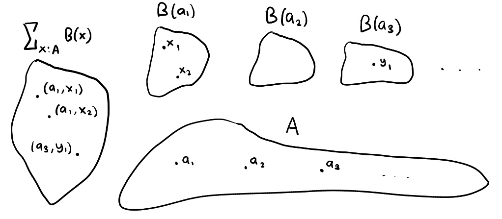

Part 3 - Dependent Types¶
A dependent type is a type that is determined by the terms of some other type. For example, if B is a dependent type over A:Type with a₁,a₂,a₃:A then what type B is depends on which term of A is fed into it, that is, each B(a₁), B(a₂), B(a₃) are typically (but not necessarily) distinct types. The following diagram illustrates this

We use the notation :
to mean "B is a dependent type over A". An example of a dependent type is n:ℕ ⊢ vec(n):Type. Depending on a term n:ℕ, we define vec(n):Type to be the type with terms consisting of n-dimensional vectors over \(\mathbb{R}\).
For example, vec(2) is a type consisting of the terms [-1,0], [0,π] , etc.. and in vec(3) we have [1,-2,3], [0,0,0], etc.. and so on..
Of course there could be cases where
x:A ⊢ B(x):TypebutBis constant no matter whatx:Awe feed into it. It is still valid to callBa dependent type even in this scenario. More specifically,Bis a constant dependent type.
Dependent Product Type¶
The idea is, given a dependent type x:A ⊢ B(x):Type, we would like to create a new type consisting of terms which maps any a:A to a term of type B(a).
Again, to create this type we specify the four rules :
Type formation rule¶
"Given a dependent type B over some A:Type, one may form the type ∏x:A B(x), called the dependent product type for B"
We could add in
A:Typeat the top bar to be more explicit but that is not necessary. Simply by statingx:A ⊢ B(x):Typewe already know implicitly thatAmust be referring to a type.
Term elimination rule¶
"Given a term f of the dependent product type and a term a:A, one may apply f to a to obtain a term of B(a). The result of this application is written f(a)"
Term introduction rule¶
How should we construct a dependent product type? The answer lies in lambda calculus. We shall provide a brief overview :
Given an expression t involving a free variable x:A (sometimes we write t[x] to make the involvement of x:A more explicit), we may form what is called a lambda abstraction :
$$
\lambda x:A, t
$$
The type of t may or may not depend on the choice of the free variable x:A, we can of course express this with a dependent type. We write x:A ⊢ t[x]:B(x) where B is some dependent type to mean that t is an expression involving a free variable x:A with the type B(x)
Example:
$$
\lambda x:ℕ, x+1
$$
here, the lambda abstraction consists of the free variable x:ℕ with the expression x+1. The expression's type in this case is not dependent on the choice of x:ℕ, of course x+1 has type ℕ regardless of whatever x:ℕ is.
Given a lambda abstraction λx:A, t[x] where x:A ⊢ t[x]:B(x) and a term a:A one may apply this lambda abstraction to a to produce a term of type B(a). The result of this application is denoted λx:A, t[x] (a) := t[a] where t[a] is the result of switching all instances of the free variable x:A in the expression with a.
For example :
$$
(\lambda x:ℕ, x+1) (3) := 4+1
$$
Notice then that lambda abstractions are exactly what we want as the terms of our dependent product thus we come up with the following term introduction rule :
$$
\frac{x:\text{A} ⊢ t[x]:\text{B}(x)}{λx:\text{A}, t[x]:\prod_{x:\text{A}} B(x)}
$$
"Given x:A ⊢ t[x]:B(x), i.e, an expression t[x]:B(x) involving x:A as a free variable, the lambda abstraction λx:A, t[x] is a term of the dependent product type"
Computation rule¶
There are two computation rules which are mostly self-explanatory. The first one specifies that application of a lambda abstraction to a term is simply a substitution process. The second one states that any term of the dependent product type is itself a lambda abstraction.
Connection to the quantifier ∀¶
Let x:A ⊢ B(x):Type and f:∏x:A B(x). Further suppose that the type B(x) is a predicate on x:A, for example if A = ℕ we could define x:ℕ ⊢ B(x) := x<5.
Remember that since
x<5is a proposition it can be viewed as a type as well
Going back to the general case, what does the existence of an f:∏x:A B(x) indicate? If we have such a term on hand then we can apply f to any term a:A to obtain f(a):B(a) where f(a) can be viewed as a proof of the proposition B(a), that is, for any a:A, f generates a proof of B(a). Thus, because we have a term f:∏x:A B(x), we know that B(a) is true for all a:A. In some sense, f is a proof of ∀a:A, B(a), and if we use the proposition as types interpretation then ∀a:A, B(a) := ∏x:A B(x) : Type.
Why is it called the dependent product type? Let us consider the case where there is a term
a:Afor which the propositionB(a)is not true, i.e,B(a)(viewed as a type) is empty. Then a termf:∏x:A B(x)is impossible to construct, i.e, the type∏x:A B(x)is empty. After all,fneeds to mapa:Ato a term of typeB(a)but there is none to map to.We can think of
∏x:A B(x)as the "multiplication" of all theB(x)'sfor eachx:A. All it takes is for one of thoseB(x)'sto be empty in order for∏x:A B(x)to be empty as well. Of course, this is analogous to arithmetic multiplication where if one of the terms in the product is zero, then the whole product is zero as well\[0 = 123 \times 6 \times 0 \times 23\times \cdots\]It is fitting then that an empty type be given the symbol
𝟘, and the dependent product type uses∏in order to reflect the similarity with regular arithmetic.
Function types¶
We finally define the function type. Given two types A,B:Type we may form the type A→B:Type whose terms consists of functions / mappings of terms from A to terms from B. It turns out that we don't have to do any more work in constructing such a type because it already comes for free as a special case of the dependent product type.
Let x:A ⊢ B(x):Type and f:∏x:A, B(x) as illustrated below

Let us suppose we find out that B does not depend on x:A. This means that B(x) are all the same type for any x:A. Let's call this type simply B.. see what happens when the diagram reflects this change :

It looks like f simply reduces to a function from A to B and likewise this implies that the type ∏x:A, B(x) reduces to A→B if B is not dependent on x:A.
I will not do it myself in this space but you may try to explicitly construct the function type anyway by specifying the four rules. It would be a good exercise to do so.
Dependent Sum Type¶
While the dependent product type, ∏, is analogous to ∀ the dependent sum type, ∑, is analogous to ∃. How do we want to create a type so that it matches the behaviour of ∃? Suppose x:A ⊢ B(x):Type then ∑x:A, B(x) := ∃x:A B(x) can be viewed as a type whose terms are proofs that there exists an x:A for which B(x) is true.
A term (proof) of ∃x:A, B(x) is thus composed of two parts. First, we'll need to provide some term a:A, then we need to provide a term p:B(a), i.e, a proof of B(a). This is how we will specify the term introduction rule.
Next, we'll need to figure out how to "use" a term of ∃x:A B(x). If q:∃x:A B(x) then it makes sense that we should be able to extract from q a term a:A and a proof p:B(a). This is how we will specify the term elimination rule.
Type formation rule¶
"Given a dependent type B over some A:Type, one may form the type ∑x:A B(x), called the dependent sum type for B"
Term introduction rule¶
$$
\frac{a:\text{A}, \quad p:\text{B}(a)}{(a,p):\sum_{x:\text{A}} \text{B}(x)}
$$
"Given some a:A and p:B(a), the combination (a,p) is a term of the dependent product type."
Term elimination rule¶
"Given a term q of the dependent sum type, one may decompose q back to the components they were constructed from as per the introduction rule. The functions π₁ and π₂ perform this action."
Computation rule¶
and here are the straightforward computation rules for the dependent sum type.
The following diagram illustrates the dependent sum type :

Like the dependent product type, the dependent sum type can be thought of as "summing" all the
B(x)'sfor eachx:A, so it makes sense that all of theB(x)'swould need to be empty for the total sum,∑x:A B(x), to be empty as well.